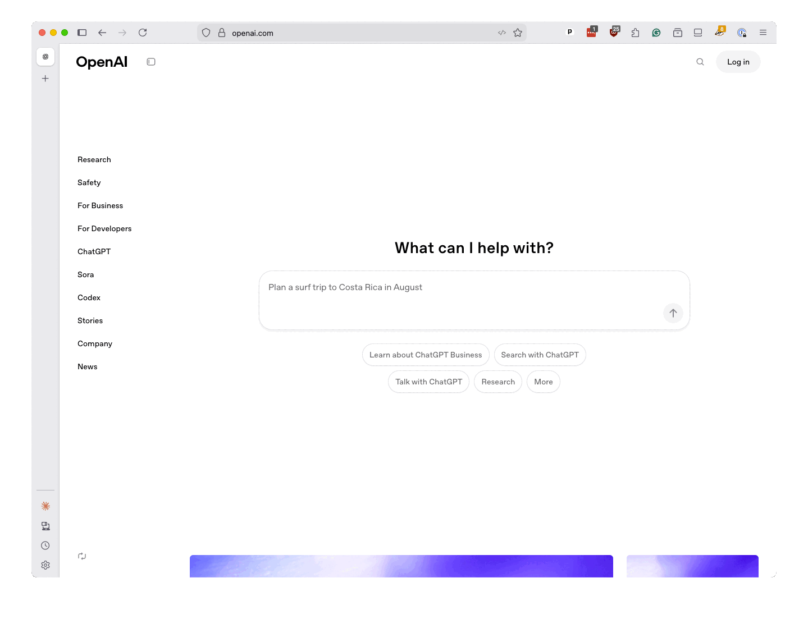

1. What we’ll do¶
Journalists frequently struggle with the mountains of messy data piled up by our periphrastic society. This vast and verbose corpus contains entries as diverse as the long-hand entries in police reports, the arcane legalese of legislative bills and the seemingly endless stream of social media posts.
Understanding and analyzing this data is critical to the job but can be time-consuming and inefficient. Computers can help by automating away the drudgery of sorting through blocks of text, extracting key details and flagging unusual patterns.
A common goal in this work is to classify text into categories. For example, you might want to sort a collection of emails as “spam” and “not spam” or identify corporate filings that suggest a company is about to go bankrupt.
Traditional techniques for classifying text — like keyword searches and regular expressions — can be brittle and error-prone. Traditional machine-learning models can be more flexible, though they require a high level of programming expertise and often yield unimpressive results.
Large-language models offer a better deal. We will demonstrate how you can use them to get superior results with less effort.
1.1. The LLM advantage¶

A large-language model is an artificial intelligence system capable of understanding and generating human language due to its extensive training on vast amounts of text. These systems are commonly referred to by the acronym LLM. The most prominent examples include OpenAI’s GPT, Google’s Gemini and Anthropic’s Claude. There are many others, including numerous open-source options.
While these LLMs are most famous for their ability to converse with humans as chatbots, they can also perform a wide range of language processing tasks, including text classification, summarization and translation.
Unlike traditional machine-learning models, LLMs do not require users to provide pre-prepared training data to perform a specific task. Instead, LLMs only ask for a broad description of their goals and a few examples of rules to follow. This approach is called prompting.
After parsing the user’s request, the LLMs will generate responses informed by the massive amount of information they contain. That deep knowledge base is far larger than anything a human could curate and provide for training.
LLMs also do not require the user to understand machine-learning concepts, like vectorization or Bayesian statistics, or to write complex code to train and evaluate the model. Instead, users can submit prompts in plain language, which the model will use to generate responses. This makes it easier for journalists to quickly experiment with different approaches.
1.2. Our example case¶
To show the power of this approach, we’ll focus on a specific data set: campaign expenditures.
Candidates for office must disclose the money they spend on everything from pizza to private jets. Tracking their spending can reveal patterns and lead to important stories.
It’s no easy task. Each election cycle, thousands of candidates log their transactions into the public databases where spending is disclosed. The flood of filings results in too much data for anyone to examine on their own. To make matters worse, campaigns often use vague or misleading descriptions of their spending, making their activities difficult to understand.
For instance, it wasn’t until after his 2022 election to Congress that journalists discovered that Rep. George Santos of New York had spent thousands of campaign dollars on questionable and potentially illegal expenses. While much of his shady spending was publicly disclosed, it was largely overlooked in the run-up to election day.
Inspired by this scoop, we will create a classifier that can scan the expenditures logged in campaign finance reports and identify those that may be newsworthy.
We will draw data from The Golden State, where the California Civic Data Coalition developed a clean, structured version of the statehouse’s disclosure data, which tracks the spending of candidates for state legislature, governor and other statewide offices. The records are now stored by Big Local News, an open-source journalism project hosted by Stanford University.